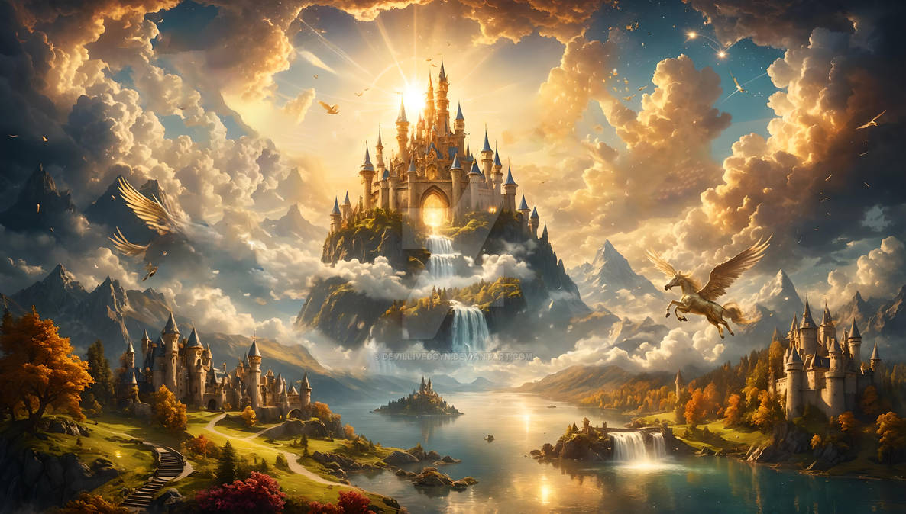
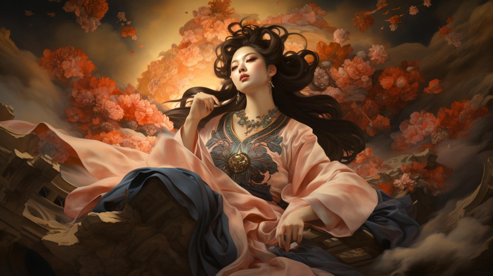
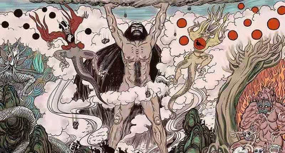
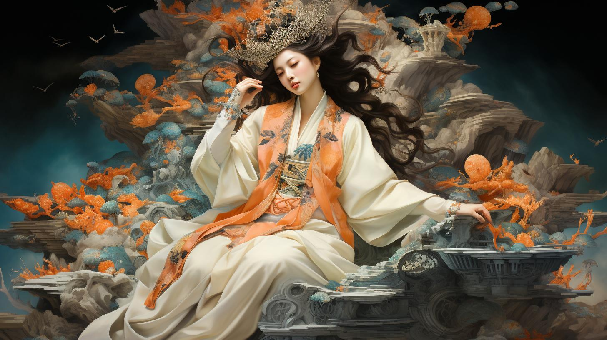
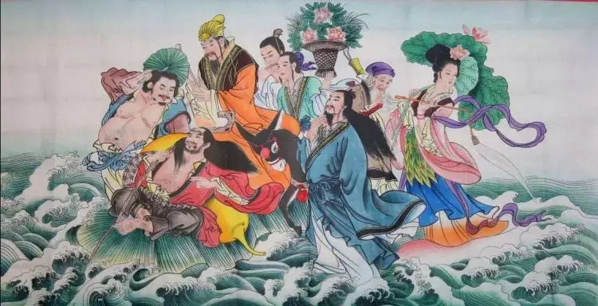
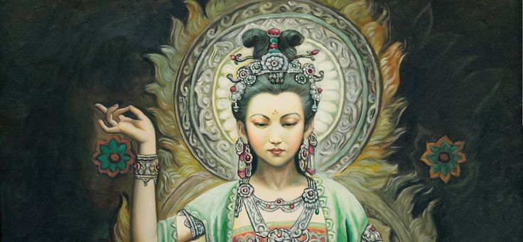
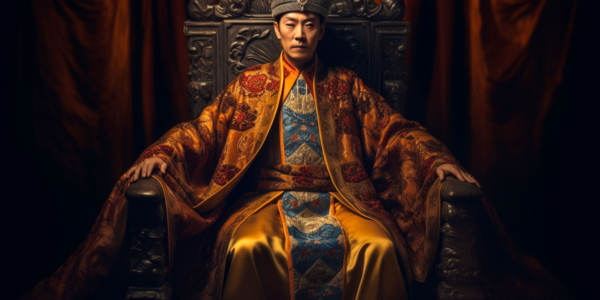

Chinese Mythology
Chinese mythology is a deeply intricate and ancient tapestry of stories, beliefs, and divine beings that have shaped the cultural and spiritual landscape of China for millennia. At its core are a diverse pantheon of deities, including supreme figures like the Jade Emperor and the Dragon King, who embody various aspects of the natural world and cosmic order.
Creation myths such as those of Pangu, who separated heaven from earth, and Nüwa, who repaired the sky and crafted humanity, provide foundational narratives about the origins of the world and human existence.
The mythology is rich with legendary figures, like the heroic archer Hou Yi and the moon goddess Chang’e, whose tales are steeped in themes of bravery, sacrifice, and immortality.
Mythical creatures, including dragons and phoenixes, symbolize power, renewal, and fortune, while the concept of immortality is personified by the Taoist immortals, whose stories blend spirituality with moral teachings.
Together, these myths reflect the values, practices, and worldview of ancient Chinese civilization, offering insights into its profound and enduring cultural heritage.
Heavenly Realm

The heavens are depicted as a grand and orderly realm where the supreme deity, the Jade Emperor, resides.
This celestial domain is characterized by its majestic palaces, divine bureaucracy, and a hierarchical system of gods and goddesses who oversee various aspects of the cosmos and earthly affairs.
Story
The Transformation
In ancient China, there was a beautiful white snake spirit named Bai Suzhen. She lived in the mountains and yearned to experience the human world. Using her magical powers, she transformed into a stunning young woman. Bai Suzhen, now in human form, ventured to the city of Hangzhou, where she encountered a kind-hearted herbalist named Xu Xian.
The Monk's Intervention
However, their happiness was not to last. A Buddhist monk named Fahai, who was aware of Bai Suzhen’s true identity as a snake spirit, believed that such a relationship was unnatural and dangerous. Fahai warned Xu Xian about Bai Suzhen, but Xu Xian, in love and trust, refused to believe him.
Determined to separate the couple, Fahai devised a plan. He tricked Bai Suzhen into revealing her true form by making her drink a potion that exposed her snake nature. When Xu Xian saw his wife transform back into her snake form, he was horrified and fled in terror.
Chinese Gods
Jade Emperor

Often considered the supreme deity in Taoism, he rules over Heaven and Earth.
Nuwa

A goddess associated with creation and protection, Nuwa is credited with creating humanity and repairing the sky.
Pangu

The primordial giant who is said to have created the world by separating the heavens from the earth.
Xi Wangmu

The Queen Mother of the West, a powerful goddess who presides over immortality and the Taoist paradise in the Kunlun Mountains.
Yuan Shi Tian Zong

One of the Three Pure Ones (Sanqing), representing the primordial aspect of the Tao.
Laozi

The deified figure of Laozi, the author of the Tao Te Ching and a central figure in Taoism.
Zhu Rong

The god of fire and one of the Five Mountain Gods, associated with the control of fire and flames.
Sun Wukong

Also known as the Monkey King, a central character in the classic novel Journey to the West, who possesses extraordinary strength and magical abilities.
The Eight Immortals

A group of legendary figures, each with unique powers, who are popular in Taoist folklore. They include Lü Dongbin, Zhang Guolao, He Xiangu, and others.
Guanyin

The Bodhisattva of Compassion, often depicted as a female figure who embodies mercy and compassion. She is highly revered in Mahayana Buddhism.
Huangdi

The Yellow Emperor, a legendary figure who is considered one of the founding ancestors of Chinese civilization and a deity of the sky.
Cheng Huang

About
Chinese mythology is a vast and intricate tapestry of ancient beliefs, legends, and deities that have shaped Chinese culture for millennia. It encompasses a rich array of stories about gods, goddesses, and mythical creatures, each embodying various aspects of nature, morality, and cosmology.
Central to these myths are figures like the Jade Emperor, the supreme ruler of Heaven, and Nuwa, the creator goddess who repaired the sky.
These myths reflect a deep connection to the natural world and the cosmos, emphasizing harmony, balance, and the interplay between the divine and the mundane.
Over time, Chinese mythology has been woven into religious practices, folklore, and literature, influencing not only Taoism and Buddhism but also the cultural and philosophical landscape of China.